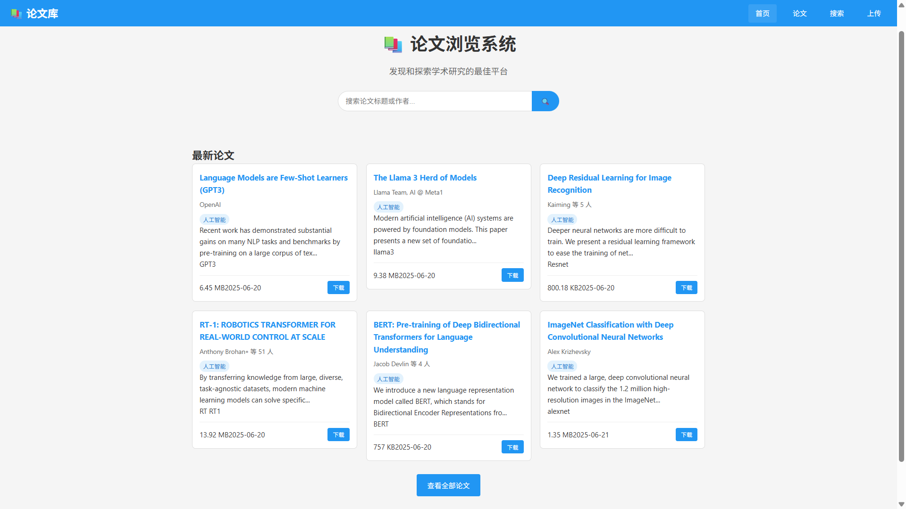
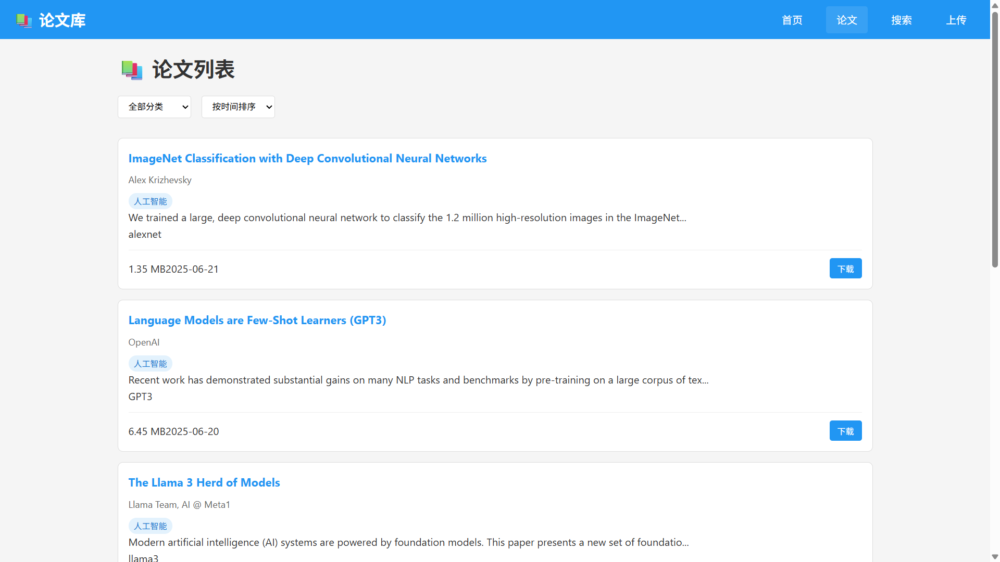
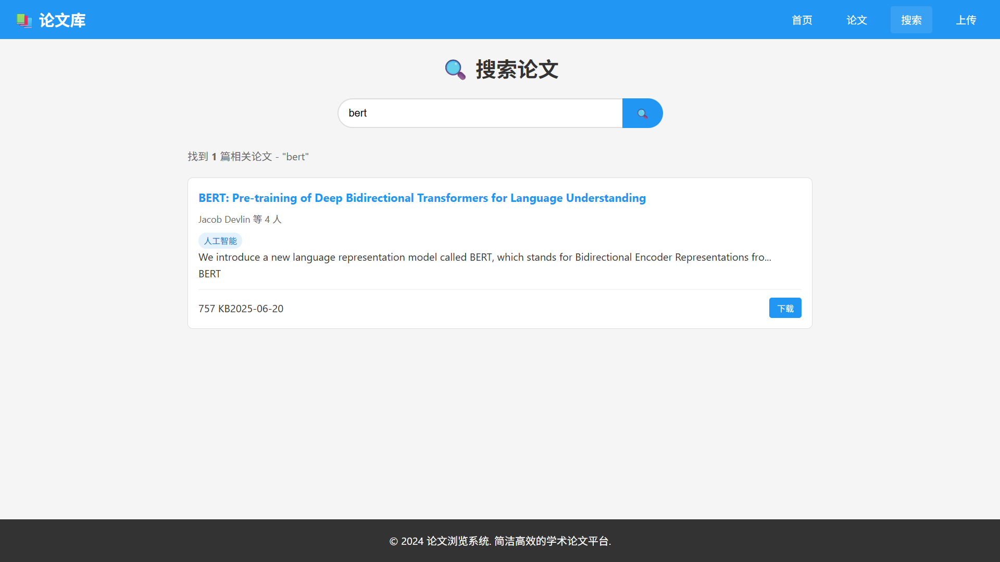
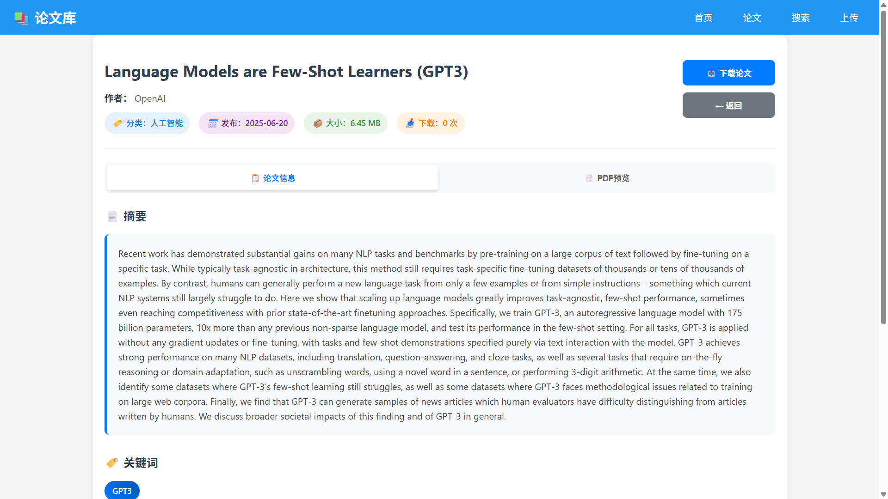
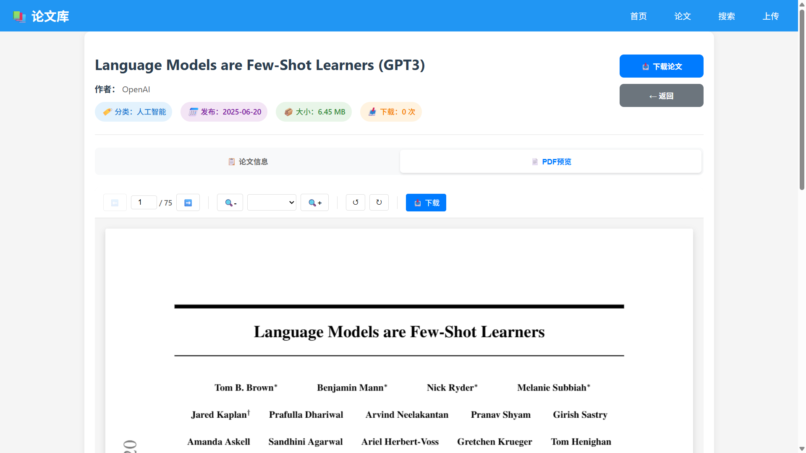
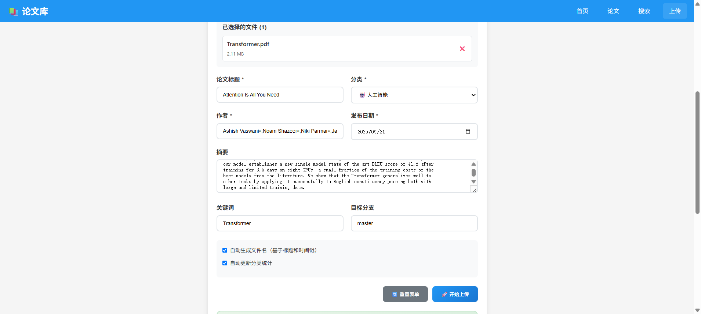
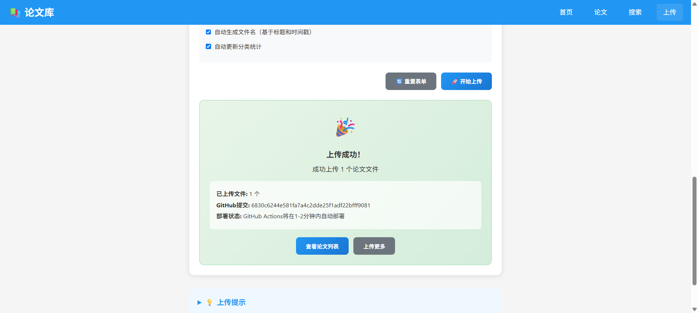

项目名称: PaperSite - 学术论文管理系统
版本: v1.0.0
项目地址: https://github.com/CRUDYYDS/PaperSite
最后更新: 2025年6月20日
随着学术研究的不断发展，研究人员需要一个高效、直观的平台来管理、浏览和分享学术论文。PaperSite旨在提供一个现代化的Web应用，支持论文的在线预览、分类管理和便捷搜索。
作为一名研究人员
我希望能够快速搜索相关领域的论文
以便找到我研究需要的参考文献
作为一名学生
我希望能够在线预览PDF论文
以便在不下载的情况下快速浏览论文内容
作为系统管理员
我希望能够批量上传和管理论文
以便维护一个完整的论文数据库
┌─────────────────┐ ┌─────────────────┐ ┌─────────────────┐
│ 前端应用 │ │ 静态资源 │ │ GitHub API │
│ (Angular) │◄──►│ (JSON/PDF) │◄──►│ │
│ │ │ │ │ │
└─────────────────┘ └─────────────────┘ └─────────────────┘
src/app/
├── core/ # 核心模块
│ ├── services/ # 核心服务
│ └── utils/ # 工具类
├── features/ # 功能模块
│ ├── home/ # 首页
│ ├── paper-list/ # 论文列表
│ ├── paper-detail/ # 论文详情
│ └── search/ # 搜索功能
├── shared/ # 共享模块
│ ├── components/ # 共享组件
│ └── pipes/ # 管道
├── layout/ # 布局组件
├── admin/ # 管理功能
└── models/ # 数据模型
interface Paper {
id: string;
title: string;
authors: string[];
abstract?: string;
keywords: string[];
category: string;
publishDate: string;
fileName: string;
fileSize: number;
repository: string;
filePath: string;
fileUrl?: string;
downloadCount: number;
createdAt: string;
}
首页： 
论文列表：  搜索：  论文详情：  论文预览：  token配置： 上传表单：  上传结果： 
┌─────────────────────────────────────┐
│ Header (导航栏) │
├─────────────────────────────────────┤
│ │
│ Main Content │
│ │
├─────────────────────────────────────┤
│ Footer │
└─────────────────────────────────────┘
采用JSON文件作为数据存储，包括：
papers.json: 论文数据和元信息categories.json: 分类数据papers/目录data/目录# 克隆项目
git clone https://github.com/CRUDYYDS/PaperSite.git
cd PaperSite
# 安装依赖
npm install
# 启动开发服务器
ng serve
# 构建项目
ng build
PaperDetailComponent)PaperService)paper-detail.component.ts)@Component({
selector: 'app-paper-detail',
templateUrl: './paper-detail.component.html',
styleUrls: ['./paper-detail.component.scss']
})
export class PaperDetailComponent implements OnInit {
// 按以下顺序组织代码：
// 1. @Input() 属性
// 2. @Output() 属性
// 3. public 属性
// 4. private 属性
// 5. constructor
// 6. 生命周期钩子
// 7. public 方法
// 8. private 方法
}
@Injectable({
providedIn: 'root'
})
export class PaperService {
// 使用依赖注入
constructor(private http: HttpClient) {}
// 返回Observable
getPapers(): Observable<Paper[]> {
return this.http.get<Paper[]>('/api/papers');
}
// 错误处理
private handleError(error: HttpErrorResponse) {
// 错误处理逻辑
}
}
export class PdfViewerComponent implements OnInit, AfterViewInit {
@Input() pdfUrl!: string;
@ViewChild('pdfCanvas') pdfCanvas!: ElementRef<HTMLCanvasElement>;
private pdfDoc: any = null;
currentPage = 1;
totalPages = 0;
scale: number | string = 1.0;
async loadPDF() {
const loadingTask = pdfjsLib.getDocument({
url: this.pdfUrl,
cMapUrl: 'https://cdnjs.cloudflare.com/ajax/libs/pdf.js/3.11.174/cmaps/',
cMapPacked: true
});
this.pdfDoc = await loadingTask.promise;
this.totalPages = this.pdfDoc.numPages;
await this.renderPage();
}
}
export class GitHubUploadService {
private readonly API_BASE = 'https://api.github.com';
async uploadFile(file: File, path: string): Promise<any> {
const base64Content = await this.fileToBase64(file);
const uploadData = {
message: `Upload ${file.name}`,
content: base64Content,
committer: {
name: 'Papers Site',
email: 'papers-site@example.com'
}
};
return this.http.put(`${this.API_BASE}/repos/owner/repo/contents/${path}`, uploadData);
}
}
// src/environments/environment.ts
export const environment = {
production: false,
githubPagesMode: false,
baseHref: '/'
};
// src/environments/environment.prod.ts
export const environment = {
production: true,
githubPagesMode: true,
baseHref: '/PaperSite/'
};
┌─────────────────┐
│ E2E Tests │ ← 少量端到端测试
├─────────────────┤
│ Integration │ ← 适量集成测试
│ Tests │
├─────────────────┤
│ Unit Tests │ ← 大量单元测试
└─────────────────┘
describe('PaperDetailComponent', () => {
let component: PaperDetailComponent;
let fixture: ComponentFixture<PaperDetailComponent>;
let paperService: jasmine.SpyObj<PaperService>;
beforeEach(() => {
const spy = jasmine.createSpyObj('PaperService', ['getPaperById']);
TestBed.configureTestingModule({
declarations: [PaperDetailComponent],
providers: [
{ provide: PaperService, useValue: spy }
]
});
fixture = TestBed.createComponent(PaperDetailComponent);
component = fixture.componentInstance;
paperService = TestBed.inject(PaperService) as jasmine.SpyObj<PaperService>;
});
it('should load paper on init', async () => {
const mockPaper = { id: '1', title: 'Test Paper' };
paperService.getPaperById.and.returnValue(Promise.resolve(mockPaper));
await component.loadPaper('1');
expect(component.paper).toEqual(mockPaper);
});
});
describe('PaperService', () => {
let service: PaperService;
let httpMock: HttpTestingController;
beforeEach(() => {
TestBed.configureTestingModule({
imports: [HttpClientTestingModule],
providers: [PaperService]
});
service = TestBed.inject(PaperService);
httpMock = TestBed.inject(HttpTestingController);
});
it('should fetch papers', () => {
const mockPapers = [{ id: '1', title: 'Test Paper' }];
service.getPapers().subscribe(papers => {
expect(papers).toEqual(mockPapers);
});
const req = httpMock.expectOne('/data/papers.json');
expect(req.request.method).toBe('GET');
req.flush({ papers: mockPapers });
});
});
describe('PDF Viewer Integration', () => {
it('should load and display PDF', async () => {
const component = fixture.componentInstance;
component.pdfUrl = '/test.pdf';
await component.loadPDF();
expect(component.totalPages).toBeGreaterThan(0);
expect(component.currentPage).toBe(1);
});
});
describe('Paper browsing flow', () => {
it('should allow user to browse and view paper', async () => {
await page.goto('/papers');
// 点击第一个论文
await page.click('.paper-card:first-child');
// 验证论文详情页面
await expect(page.locator('.paper-title')).toBeVisible();
// 点击PDF预览
await page.click('[data-testid="pdf-preview-tab"]');
// 验证PDF加载
await expect(page.locator('.pdf-canvas')).toBeVisible();
});
});
# 运行单元测试
ng test
# 运行测试并生成覆盖率报告
ng test --code-coverage
# 运行端到端测试
ng e2e
┌─────────────────┐ ┌─────────────────┐ ┌─────────────────┐
│ 开发环境 │ │ GitHub仓库 │ │ GitHub Pages │
│ (localhost) │───►│ (源代码) │───►│ (生产环境) │
│ │ │ │ │ │
└─────────────────┘ └─────────────────┘ └─────────────────┘
开发者推送代码 → GitHub Actions触发 → 自动构建 → 自动部署到GitHub Pages
# .github/workflows/deploy.yml
name: Deploy to GitHub Pages
on:
push:
branches: [ main ]
jobs:
build-and-deploy:
runs-on: ubuntu-latest
steps:
- uses: actions/checkout@v3
- name: Setup Node.js
uses: actions/setup-node@v3
with:
node-version: '18'
- name: Install dependencies
run: npm ci
- name: Build
run: ng build --configuration production
- name: Deploy
uses: peaceiris/actions-gh-pages@v3
with:
github_token: ${{ secrets.GITHUB_TOKEN }}
publish_dir: ./dist
// angular.json
{
"configurations": {
"production": {
"baseHref": "/PaperSite/",
"deployUrl": "/PaperSite/",
"outputHashing": "all",
"sourceMap": false,
"optimization": true,
"buildOptimizer": true
}
}
}
GITHUB_TOKEN: GitHub访问令牌 (自动生成)
// src/environments/environment.prod.ts
export const environment = {
production: true,
githubPagesMode: true,
baseHref: '/PaperSite/',
apiUrl: 'https://crudyyds.github.io/PaperSite'
};
推送代码到main分支
git add .
git commit -m "Deploy: update features"
git push origin main
等待GitHub Actions完成
验证部署结果
如果部署出现问题：
故障发现 → 问题诊断 → 影响评估 → 修复方案 → 实施修复 → 验证结果 → 总结改进